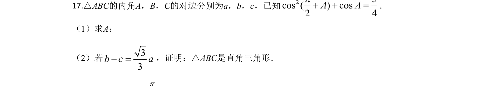
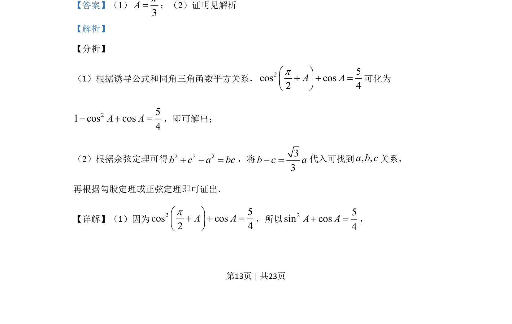
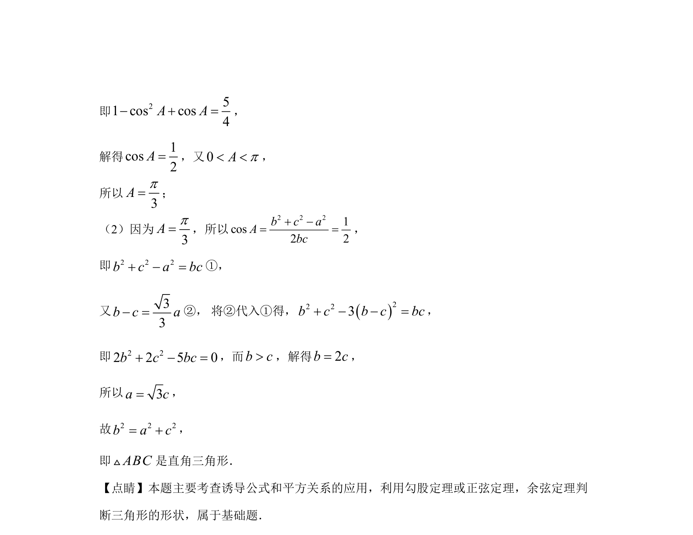

考点：诱导公式 同角三角函数平方关系 余弦定理

利用诱导公式与同角关系求角A，再结合余弦定理和边的关系证明结论。


📄 原 PDF 第 13 页：
素材/真题/吉林/2008-2024·（吉林）数学高考真题/2020年高考数学试卷（文）（新课标Ⅱ）（解析卷）.pdf
17.△ABC的内角A，B，C的对边分别为a，b，c，已知25cos ( ) cos2 4A Ap+ + =． （1）求A； （2）若33b c a- =，证明：△ABC是直角三角形．
【答案】（1） 3Ap=；（2）证明见解析 【解析】 【分析】 （1）根据诱导公式和同角三角函数平方关系，25cos cos2 4A Apæ ö+ + =ç ÷è ø 可化为 251 cos cos4A A- + =，即可解出； （2）根据余弦定理可得2 2 2b c a bc+ - =，将33b c a- =代入可找到, ,a b c关系， 再根据勾股定理或正弦定理即可证出． 【详解】（1）因为25cos cos2 4A Apæ ö+ + =ç ÷è ø ，所以25sin cos4A A+ =，